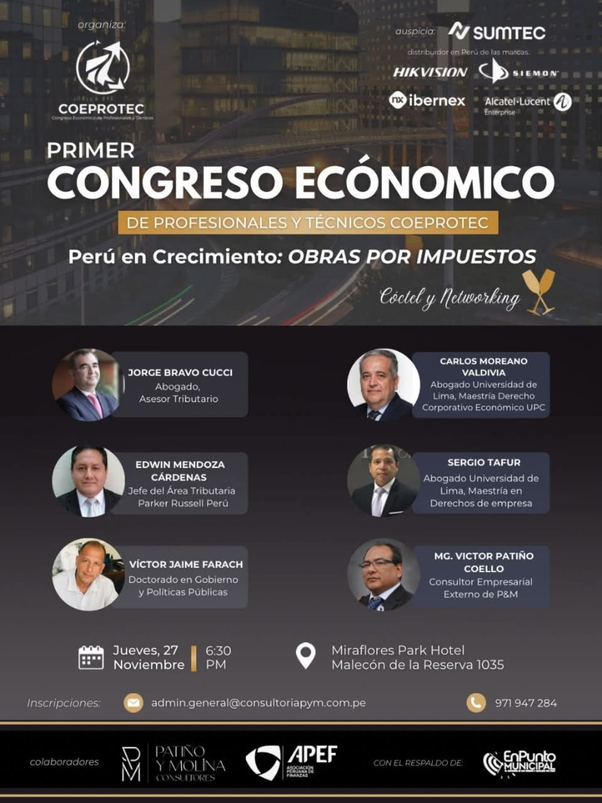

PONENTE · EDICIÓN 2025
Jorge Bravo Cucci
Abogado · asesor tributario
PRIMER CONGRESO · ARCHIVO 2025
Perú en Crecimiento: Obras por Impuestos.
NUESTRA TRAYECTORIA
El proyecto conserva una referencia al Primer Congreso Económico de Profesionales y Técnicos, bajo el tema «Perú en Crecimiento: Obras por Impuestos».
El registro disponible lo sitúa el 27 de noviembre de 2025 en Miraflores Park Hotel, Lima. Se está reuniendo el programa, documentación y fotografías originales para completar la memoria institucional.
Datos históricos preliminares del proyecto: pendientes de contrastarse con documentación oficial.
PARTICIPACIÓN HISTÓRICA
Ponentes y reseñas transcritos del flyer oficial de 2025 facilitado por el equipo. Los cargos reflejan la información anunciada para esa edición.
Abogado · asesor tributario
Abogado · Universidad de Lima · maestría en Derecho Corporativo Económico (UPC)
Jefe del Área Tributaria · Parker Russell Perú
Abogado · Universidad de Lima · maestría en Derecho de Empresa
Doctorado en Gobierno y Políticas Públicas
Consultor empresarial externo de P&M
MEMORIA DEL CONGRESO 2025 · DOCUMENTO HISTÓRICO
Primer Congreso Económico de Profesionales y Técnicos: «Perú en Crecimiento: Obras por Impuestos».
Los auspiciadores y colaboradores que figuran en el flyer corresponden exclusivamente a la edición 2025.
Ver flyer oficial en tamaño completo
MEMORIA AUDIOVISUAL · 2025
Tres enlaces de YouTube y un video de Google Drive proporcionados por el equipo como material de COEPROTEC 2025. Sus títulos y contenido específico aún deben contrastarse con las publicaciones originales.
Video alojado en Google Drive
La reproducción integrada requiere permisos de acceso. Abrir el video en DriveMaterial audiovisual adicional compartido por el equipo. Pendiente de confirmar su relación específica con COEPROTEC 2025.
Abrir en Google DriveVideo de YouTube compartido como material de la edición 2025. Título y participantes pendientes de verificar.
Abrir en YouTubeVideo de YouTube compartido como material de la edición 2025. Título y participantes pendientes de verificar.
Abrir en YouTubeVideo de YouTube compartido como material de la edición 2025. Título y participantes pendientes de verificar.
Abrir en YouTubeSIGUIENTES ENCUENTROS
Conoce los encuentros y actividades anunciados actualmente o consulta el prerregistro informativo.